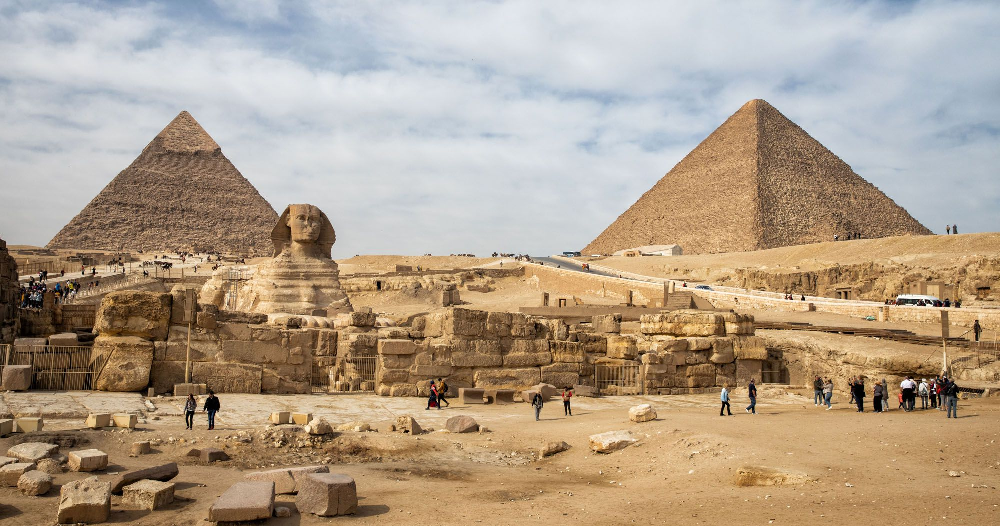

My favourite places to see in Irelend
There are lots of places to go and see in Ireland. Here is a small selection!
The Pyramids
The Giza pyramid complex (Arabic: مجمع أهرامات الجيزة), also called the Giza necropolis, is the site on the Giza Plateau in Greater Cairo, Egypt that includes the Great Pyramid of Giza, the Pyramid of Khafre, and the Pyramid of Menkaure, along with their associated pyramid complexes and the Great Sphinx of Giza.
KhanKhalili
Khan el-Khalili (Arabic: خان الخليلي) is a famous bazaar and souq (or souk) in the historic center of Cairo, Egypt. Established as a center of trade in the Mamluk era and named for one of its several historic caravanserais,